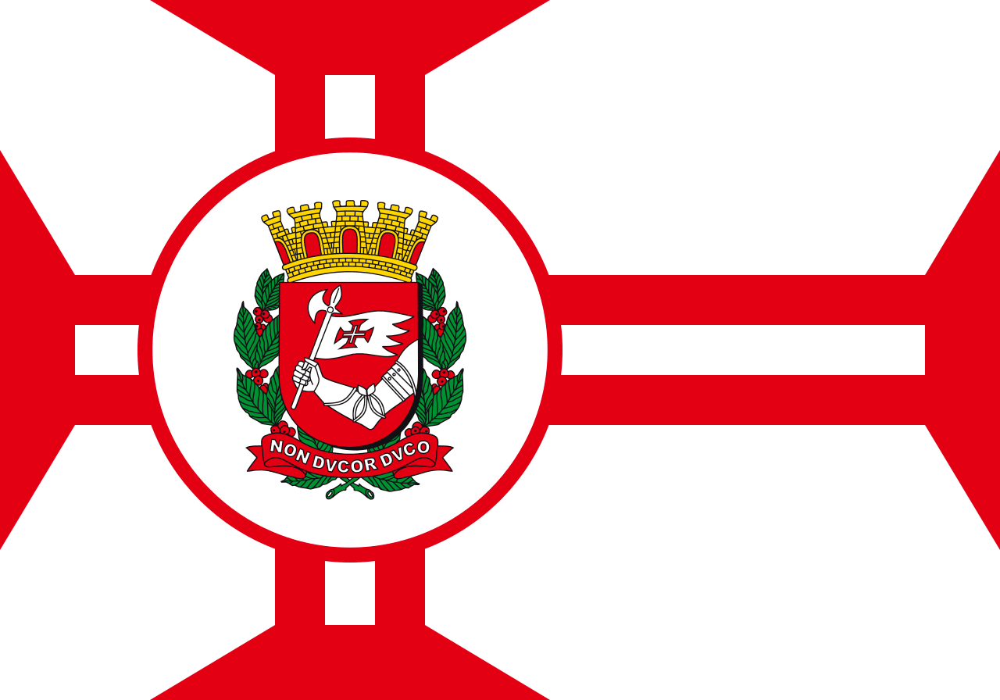
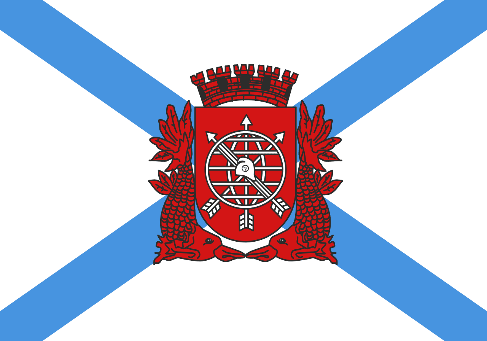
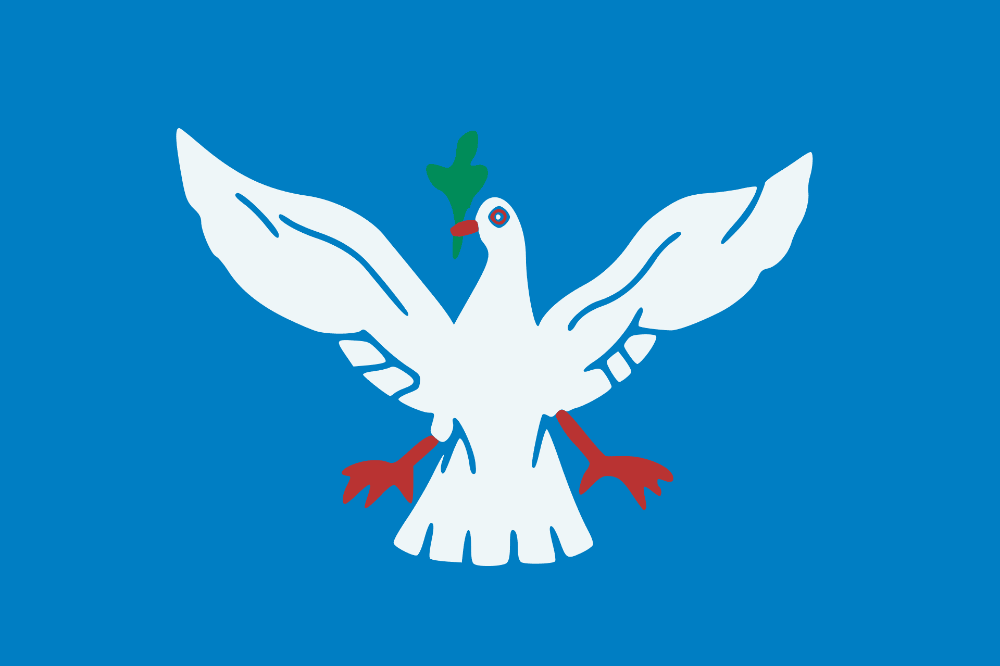
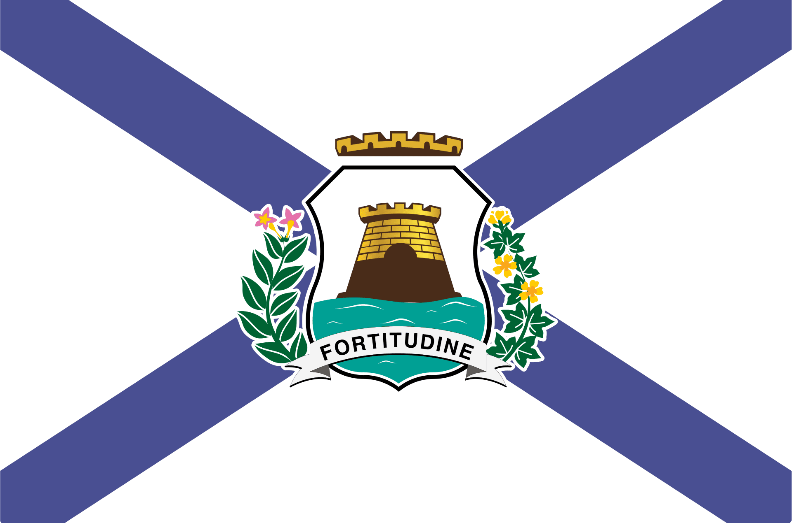
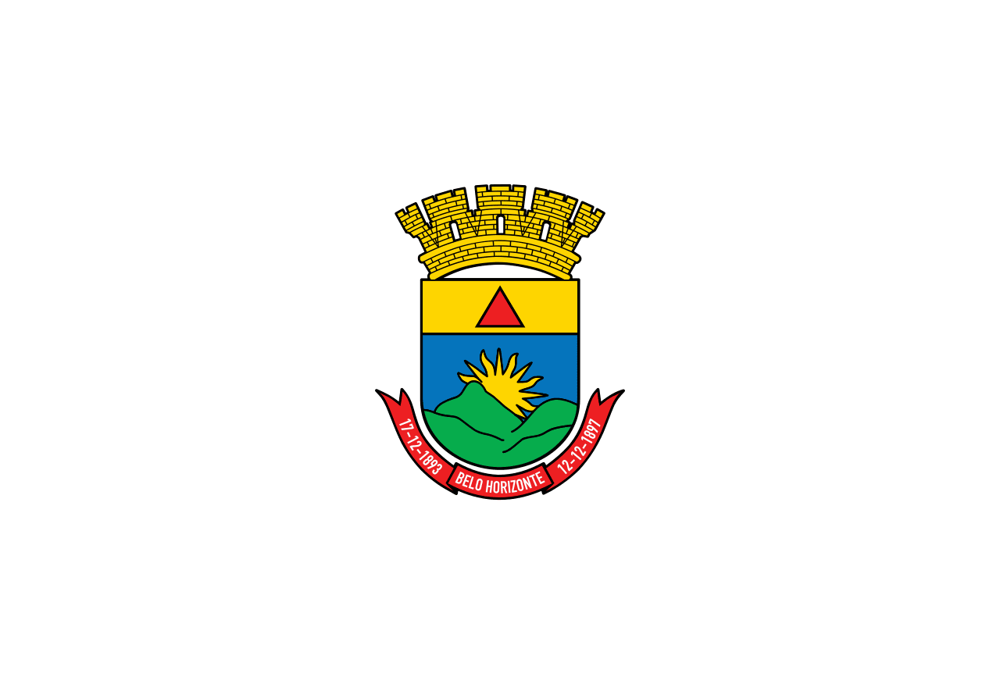
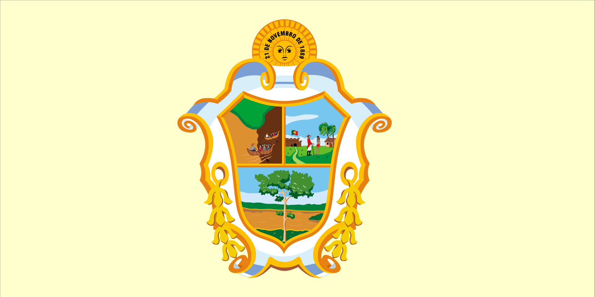
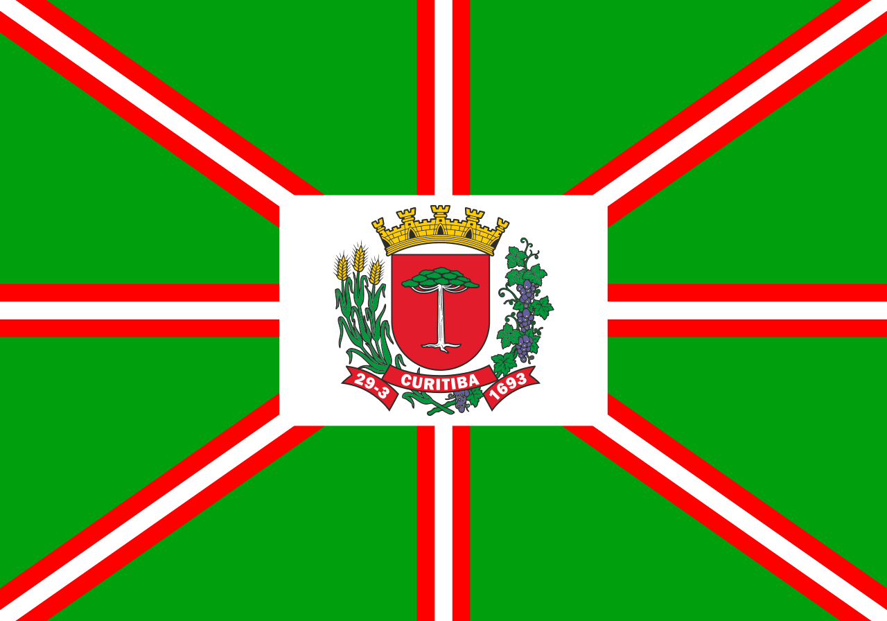
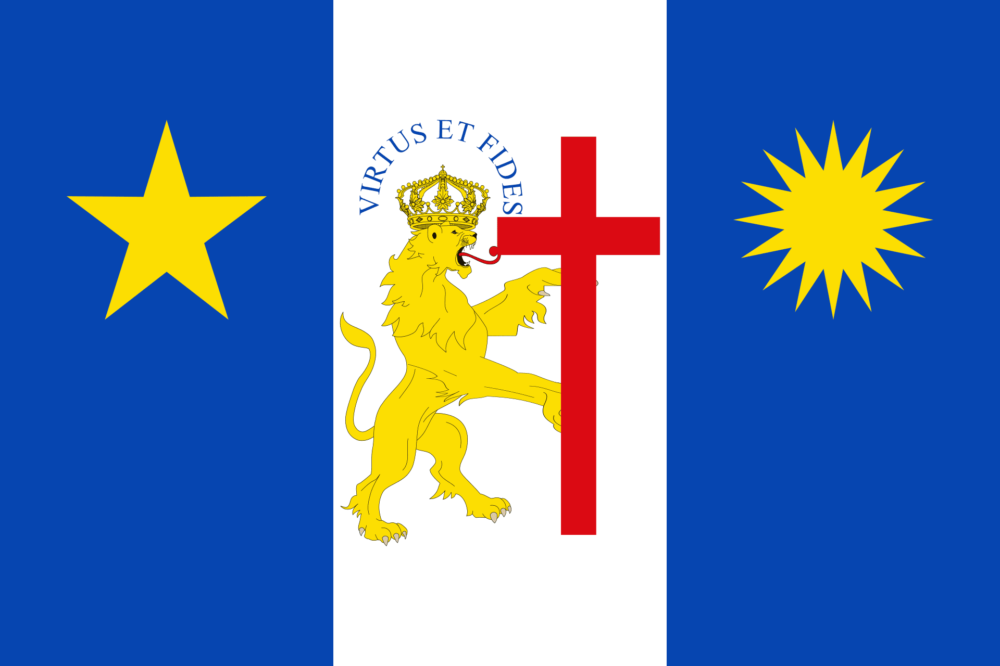
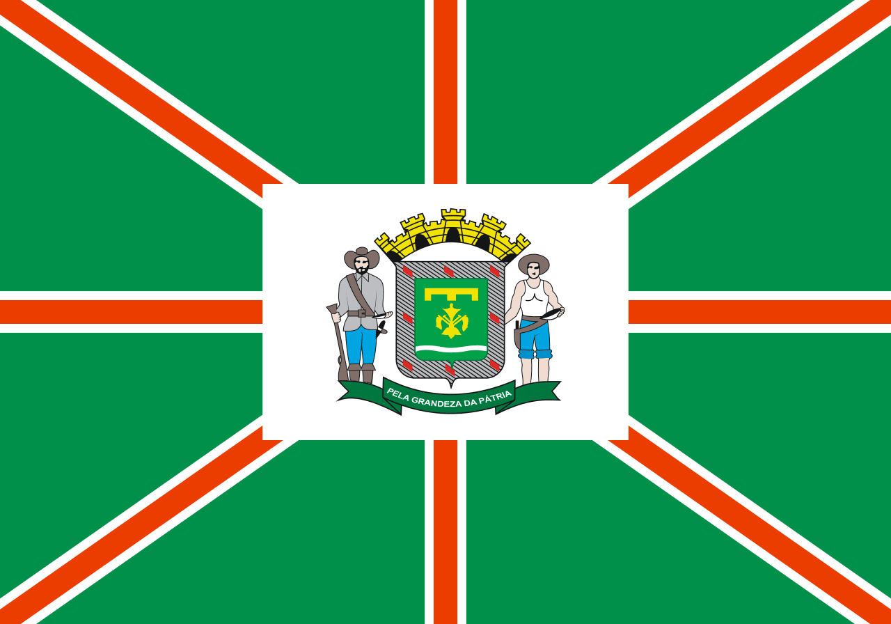

As 10 cidades mais populosas do Brasil*
-

São Paulo/SP - 12.396.372 pessoas
-

Rio de Janeiro/RJ - 6.775.561 pessoas
-
Brasília/DF - 3.094.325 pessoas
-

Salvador/BH - 2.900.319 pessoas
-

Fortaleza/CE - 2.703.391 pessoas
-

Belo Horizonte/MG - 2.530.701 pessoas
-

Manaus/AM - 2.255.903 pessoas
-

Curitiba/PR - 1.963.726 pessoas
-

Recife/PE - 1.661.017 pessoas
-

Goiânia/GO - 1.555.626 pessoas
*estimativa do IBGE para 2021